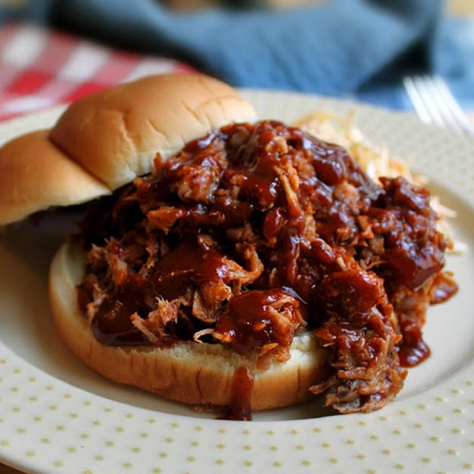

Pulled Pork Burger

Description
Pulled Pork ist mittlerweile ein wahrer Klassiker des BBQs. Die Zubereitung nimmt zwar etwas Zeit in Anspruch,
für den Geschmack lohnt es sich aber definitiv – vor allem in Form eines Burgers! Pulled Pork Burger – himmlisch lecker
Eine leckere BBQ-Sauce und Coleslaw (probiere auch unser Rezept für diesen selbstgemachten amerikanischen Krautsalat aus)
– mehr braucht es nicht.
- Schweinenacken ohne Knochen
- Knoblauch
- Schwarze Pfefferkörner
- Szechuan-Peffer
- Chiliflocken
- Meersalz
- Burger Buns
- BBQ-Sauce
- Krautsalat
Steps
- Zunächst musst du natürlich das Pulled Pork zubereiten.
- Die Zubereitung auf dem Grill oder im Smoker dauert mehrere Stunden, bis das Fleisch die passende Kerntemperatur (etwa 90 °C) erreicht hat.
Anschließend muss das Fleisch noch etwa 15 Minute ruhen
- In diese Zeit kannst du die Burgerbrötchen aufschneiden und kurz angrillen.
- Dann das Fleisch in feine Stücke zupfen und mit der BBQ-Sauce vermischen. Nacheinander Pulled Pork und etwas Coleslaw auf die untere
Brötchenhälfte geben. Obere Brötchenhälfte darauflegen.
Back